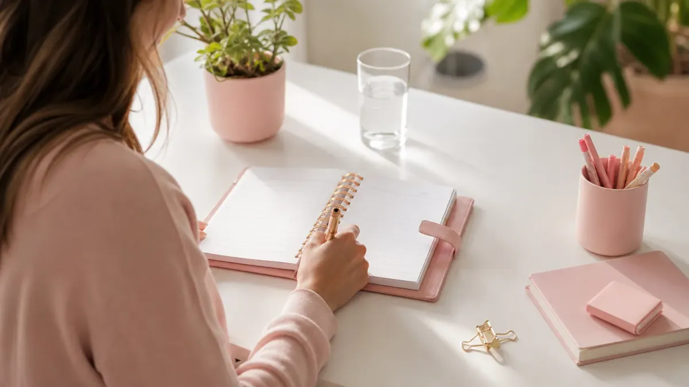

「今度こそ続けよう」と決意したのに、気づけば元の生活に戻っていた——そんな経験、一度はありますよね。
実は、ダイエットが続かない原因は意志の弱さではなく、仕組みの問題であることがほとんどです。
この記事では、習慣化の心理学をベースに、今日から使える7つのコツを具体的にお伝えします。「やる気が出てから始める」のではなく、「始めるからやる気が出る」流れを一緒に作りましょう。
なぜダイエットは続かないのか？3つの本当の理由
習慣化に失敗する理由は、だいたい次の3つに集約されます。
- ①目標が大きすぎる：「3か月で5kg減」など、最初から高い目標を設定してしまう
- ②行動のハードルが高い：「毎日1時間運動」など、日常に組み込みにくいルールを作る
- ③完璧主義になる：1日サボると「もういいや」とリセットしてしまう
どれも「頑張ろうとしすぎた」結果です。ダイエットの習慣化は、頑張らなくても続く仕組みを先に作ることがポイントです。
習慣化の基本：行動は「21日」ではなく「66日」が目安
よく「21日続ければ習慣になる」と言われますが、ロンドン大学の研究では、新しい行動が自動化されるまでに平均66日かかることが示されています。
つまり、最初の3週間でやめてしまうのは当然のこと。「まだ定着していない時期に、定着していないことを責めていた」だけなんです。
焦らず、2か月間を「仕込み期間」と考えましょう。
ダイエット習慣化のコツ7選
コツ①：目標を「行動」に変換する
「痩せる」という目標は結果であり、行動ではありません。
✅ NG：「3kg痩せる」
✅ OK：「毎朝、白湯を1杯飲む」
行動目標は達成・未達成がはっきりわかるため、小さな成功体験を毎日積み重ねられます。
コツ②：「2分でできる行動」から始める
習慣化研究の第一人者ジェームズ・クリアーは、新しい習慣を「2分以内でできる形」にまで縮小することを提唱しています。
- ストレッチ → まず「マットを広げるだけ」
- ウォーキング → まず「玄関を出るだけ」
- 食事記録 → まず「アプリを開くだけ」
「始めること」を超小型化すると、やる気がゼロでも動けます。
コツ③：既存の習慣に「くっつける」
新しい習慣を既存の行動とセットにする「習慣スタッキング」は、定着率を大きく上げる方法です。
例：「歯を磨いた後に、スクワット10回」
例：「コーヒーを入れた待ち時間に、体重を記録」
すでにある行動がトリガーになるため、「やるタイミングを考える」ストレスがなくなります。
コツ④：環境を先に整える
意志力に頼らず、「自然にやってしまう環境」を作ることが最強の習慣化戦略です。
- ウォーキングシューズを玄関に出しておく
- 野菜を洗って冷蔵庫の目立つ場所に置く
- スマホのホーム画面に記録アプリを置く
逆に、やめたい行動（お菓子の食べすぎなど）は「取り出しにくい場所」に移すだけで自然と減ります。
コツ⑤：「完璧」より「続けること」を優先する
1日サボっても、2日連続でサボらないことを意識しましょう。
習慣は「完璧な連続」より「長期的な継続率」の方が重要です。週5日できれば十分。週3日でも、ゼロよりはるかに前進しています。
「今日できなかった」ではなく、「今週何日できたか」で評価するクセをつけると、自己否定のループから抜け出せます。
コツ⑥：記録で「見える化」する
体重・食事・運動を記録することで、行動が「見える資産」になります。
記録のポイントは「結果だけでなく行動を記録する」こと。体重が変わらない日でも、「今日は歩いた」という事実が自信になります。
手帳・スマホアプリ・カレンダーへのシール貼りなど、自分が続けやすい方法でOKです。
コツ⑦：「なぜ痩せたいか」を具体的に言語化する
「なんとなく痩せたい」より、「〇〇のために変わりたい」という動機の方が、困難な時期を乗り越える力になります。
例：「来年の同窓会で自信を持って会いたい」「子どもと元気に遊べる体でいたい」
この動機を手帳の1ページ目や、スマホの待ち受けに書いておくと、やる気が落ちた時の「リセットボタン」になります。
📋 習慣化を成功させる7ステップ｜今日からできる行動マップ
✨ 意志力に頼らず「仕組み」で続ける！
習慣化を助ける「環境デザイン」の具体例
コツ④で紹介した環境づくりを、もう少し具体的に見てみましょう。
「やりやすくする」環境
- ヨガマットをリビングに常に広げておく
- 水のボトルをデスクの上に置く
- ウォーキング用のウェアを前日夜に出しておく
「やりにくくする」環境
- お菓子を棚の奥にしまう（目に入らなくする）
- スマホを寝室に持ち込まない（睡眠の質を守る）
- 食事中はテレビを消す（食べすぎを防ぐ）
行動を変えるより、環境を変える方が10倍ラクです。
「やる気が出ない日」の乗り越え方
やる気は行動の「原因」ではなく「結果」です。動いた後にやる気が出てくることの方が多いもの。
やる気が出ない日は、「1つだけやる」と決めましょう。
- スクワット1回だけ
- 野菜を1口だけ食べる
- 体重計に乗るだけ
「1つやった」という事実が、翌日の行動につながります。やる気が出ない時の対処法についてさらに詳しく知りたい方は、ダイエットのやる気が出ない時の立て直し方もあわせてご覧ください。
三日坊主を卒業するための「許可の技術」
「サボった自分を責めない」と頭でわかっていても、なかなかできないですよね。
そこでおすすめなのが、「サボり日を事前にスケジュールする」方法です。
例：「月・水・金は実行日、火・木は休養日」と最初から決めておく。
休む日を「失敗」ではなく「計画通り」にすることで、罪悪感なく続けられます。三日坊主を卒業するための具体的な対策は、ダイエット三日坊主を卒業する7つの対策で詳しく解説しています。
習慣化チェックリスト：今週から始める5つのこと
- ✅ 行動目標を1つだけ決める（例：毎朝体重を記録する）
- ✅ その行動を「既存の習慣」にくっつける
- ✅ 環境を1か所だけ変える（シューズを玄関に出すなど）
- ✅ 「なぜ変わりたいか」を手帳に書く
- ✅ 今週の「休養日」を先に決めておく
全部やらなくていいです。まず1つだけ。それが習慣化の第一歩です。
よくある質問
Q. 習慣化するまで何日かかりますか？
研究によると、新しい習慣が自動化されるまでの平均は約66日です。「21日で習慣になる」という説もありますが、行動の種類や難易度によって18〜254日と幅があります。最初の2週間は特にしんどく感じやすい時期なので、「まだ定着していない段階だから当然」と割り切って続けることが大切です。
Q. 毎日続けられない日があっても大丈夫ですか？
大丈夫です。習慣化において重要なのは「完璧な連続」ではなく「長期的な継続率」です。1日サボっても、翌日に再開すれば習慣は壊れません。意識したいのは「2日連続でサボらない」こと。週に3〜4日できれば、十分に習慣として積み上がっていきます。自分を責めるより、「また明日やろう」と切り替える練習の方がずっと大切です。
Q. 運動や食事制限が続かないのですが、何から始めればいいですか？
まずは「記録するだけ」から始めることをおすすめします。体重を毎朝記録する、食べたものをメモするなど、行動を変えなくても始められることが最初の一歩です。記録を続けると自分のパターンが見えてきて、自然と行動が変わりやすくなります。運動や食事制限は、記録が習慣になってから少しずつ加えていきましょう。
まとめ：ダイエット習慣化は「仕組み」で決まる
ダイエットが続かないのは、あなたの意志が弱いからではありません。
続かない仕組みの中で、続けようとしていただけです。
- 目標を行動に変換する
- 2分でできる形にする
- 既存の習慣にくっつける
- 環境を先に整える
- 完璧より継続を優先する
- 行動を記録して見える化する
- 「なぜ」を言語化して貼っておく
この7つのコツを、今日から1つだけ試してみてください。小さな一歩が、2か月後の大きな変化につながります。
ダイエットの習慣化に関連するさまざまなヒントは、ダイエット習慣の関連記事一覧からもご覧いただけます。